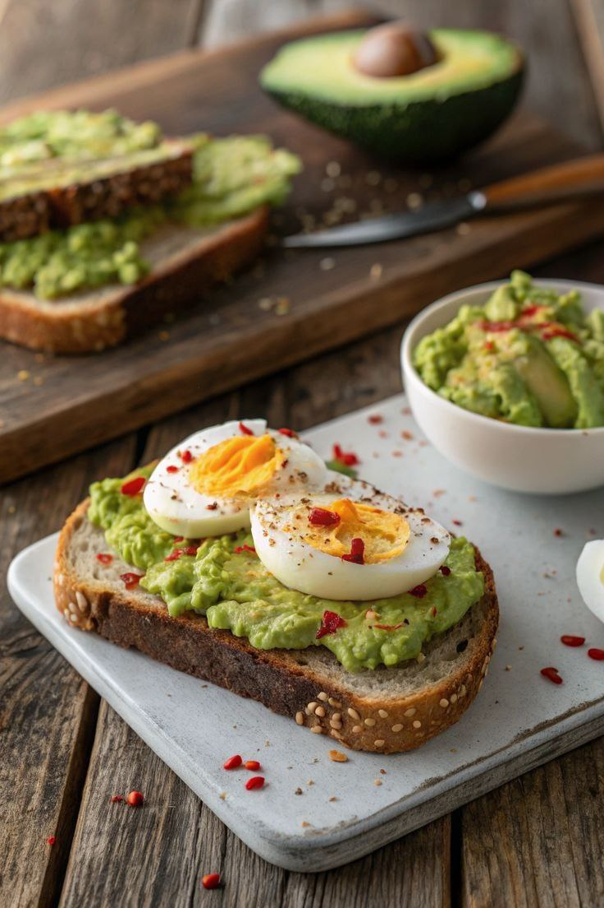

Recipe List
Oatmeal with Fruits and Nuts
Ingredients
- ½ cup rolled oats
- 1 cup water or almond milk (or low-fat milk)
- ½ banana or chopped apple
- 1 tablespoon almonds or walnuts
- 1 teaspoon natural honey (optional)
Instructions
- Pour the oats and water or milk into a small saucepan and place over low heat
- When the oats begin to soften, add the chopped fruit.
- After about 5–7 minutes, once fully cooked, transfer to a bowl
- Top with nuts and cinnamon, and add honey if desired.

Boiled Eggs with Avocado on Whole Grain Bread
Ingredients
- 2 eggs
- 1–2 slices of whole grain bread
- ½ ripe avocado
- Salt and black pepper, to taste
- A few drops of lemon juice (optional)
Instructions
- Boil the eggs in water for about 8–10 minutes until hard-boiled.
- Mash the avocado and mix in a little salt, pepper, and lemon juice.
- Toast the bread and spread the avocado mixture on each slice.
- Slice the boiled eggs and place them on top of the avocado. You can garnish with red pepper flakes or paprika if desired.

Energizing Green Smoothie (with Banana and Spinach)
Ingredients
- 1 banana
- 1 cup fresh spinach
- 1 cup almond milk or low-fat milk
- 1 teaspoon chia seeds (optional)
- 1 date or ½ teaspoon honey for sweetness (optional)
- A few ice cubes
Instructions
- Add all the ingredients to a blender.
- Blend well for 30 seconds to 1 minute until smooth and creamy.
- Pour into a glass and drink immediately. This smoothie is very beneficial for digestion.
Lemon Ginger Water
Ingredients
- 1 lemon
- 1 small piece of fresh ginger (about 2 cm)
- 1 glass of warm water
- 1 teaspoon honey (optional)
Instructions
- Grate or finely chop the ginger.
- Cut the lemon in half and squeeze out the juice.
- Add the lemon juice and ginger to a glass of warm water.
- Add a little honey for sweetness if desired.
- Stir well and enjoy this anti-inflammatory and digestive drink.
Green Tea with Mint
Ingredients
- 1 green tea bag
- 5–6 fresh mint leaves
- 1 cup boiling water
- 1 tablespoon almonds or walnuts
- 1 teaspoon honey (optional)
Instructions
- Slightly crush the mint leaves with your hands to release their aroma.
- When the oats begin to soften, add the chopped fruit.
- Place the green tea bag and mint leaves in a cup.
- Pour boiling water over the tea and mint.
- Let it steep for a few minutes.
- Add some honey for sweetness if you like.
- Your healthy and soothing drink is ready.
Strawberry Almond Smoothie
Ingredients
- 1 cup fresh or frozen strawberries
- 1 cup water or almond milk (or low-fat milk)
- ½ cup almond milk or low-fat milk
- 1 tablespoon chopped almonds
- 1 teaspoon honey or maple syrup (optional)
- ½ cup ice (optional)
Instructions
- Add the strawberries, almond milk, chopped almonds, and honey to a blender.
- Blend until the mixture is completely smooth.
- For a cooler drink, you can add some ice.
- Pour the smoothie into a glass and enjoy!
Hummus with Raw Veggies
Ingredients
- 2–3 tablespoons of hummus
- 1 carrot, 1 cucumber, a few celery stalks, 1 bell pepper – all sliced
Instructions
- Spoon the hummus into a small bowl.
- Cut the vegetables into small, bite-sized pieces.
- Serve the sliced veggies with the hummus as a dip.
- This snack is very low in calories and a great source of fiber, plant-based protein, and vitamins.
Greek Yogurt with Nuts and Honey
Ingredients
- ½ cup unsweetened Greek yogurt
- 1 tablespoon chopped almonds or walnuts
- ½ teaspoon natural honey (optional)
Instructions
- Place the Greek yogurt in a bowl.
- Chop the almonds or walnuts into small pieces.
- Add the chopped nuts to the yogurt.
- If desired, drizzle a little natural honey on top.
- This snack is rich in protein and calcium, and the nuts provide healthy fats.
Apple with Natural Peanut Butter
Ingredients
- 1 apple
- 1 tablespoon natural peanut butter (no added sugar)
Instructions
- Slice the apple into wedges or rings.
- Spread the peanut butter on the apple slices and enjoy.
- This snack contains fiber (from the apple) and healthy fats (from the peanut butter), making it naturally energizing and satisfying.